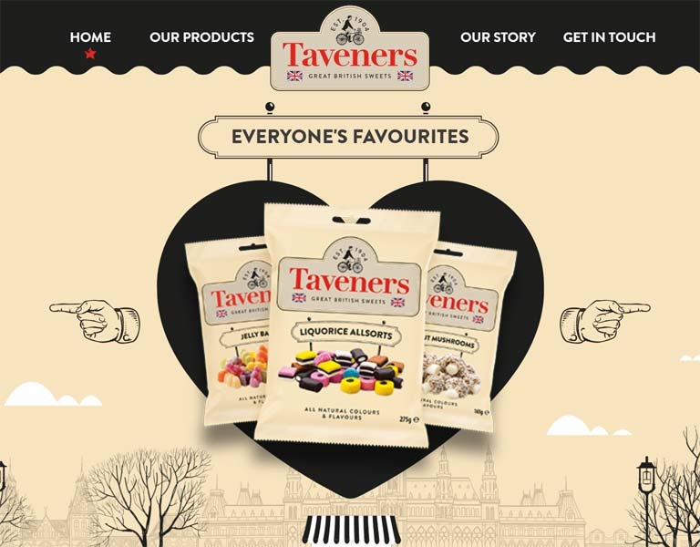

A meticulous web developer from Leeds with a passion for Automation
HTML5
CSS3
JavaScript
Responsive Web Design
Web Standards
Automation
About
Passionate about Front End Web Development, with 7 years of industry experience. Always on top of the latest front end technologies, whilst applying them to my work to produce high performing, visually pleasing websites. Have produced work
for many high profile clients such as - Walmart Asda, 188Bet, Coral, Co-op, and Jet2.
Below is a brief overview of my skillset. I have a very good understanding of the fundamentals i.e. HTML, CSS, and JavaScript. The majority of my Javascript skills are in the form of client side scripting (vanilla and jQuery), but I do have some OOP/Functional
programming experience, which I am very keen to develop.
Web Development
Responsive Web Development
Workflow automation
Cross-browser Compatibility
SEO and Semantic code
Mobile first
Standards Compliance
HTML5 Canvas
Site optimisation
HTML Emails
IE7+ Compatibility
CMS/CRM
Wordpress
Ektron (Certified Administrator)
Oracle Responsys
Dotmailer
Mailchimp
Salesforce
Web Stack
HTML5
CSS3
jQuery
SASS
JavaScript
Gulp
Vue.js (learning)
GSAP
Work
Here is some of my recent work, which I feel best highlights my abilities across a range of areas. The majority of my workload consists of WordPress builds, which are heavily optimised, and custom built using ACF.
I have a good understanding of the programmatical side of WordPress, and my builds often include custom functionality.
Where any work/code detailed below isn't available to view publicly, the majority of it is upon request.
You can view the source code for this portfolio on my Github.

Taveners
WordPress
This was built using designs created in Illustrator, and involved a bit of SVG creation and manipulation.
Custom Post Types were used to create the products section.
Includes live HTML/CSS injection with Browser Sync, image compression, minification, and lots more. It's fully documented, and maintained on a regular basis.
For some large projects, I like to manage my time through Google Sheets. These are created whilst I'm providing time estimates (n.B. This is after the initial ball park estimate). This process is beneficial for myself, but also the PM team - as it
helps me accurately report back updates on my progress.
here are some recent examples of projects I've provided estimates for: